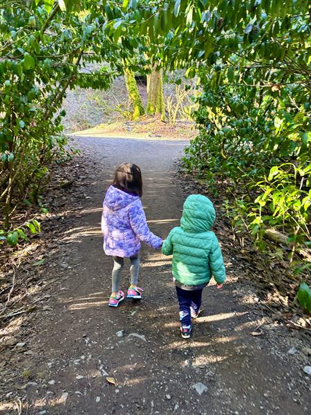

Overview
Patricia M. Chang
I turn ambiguity into scalable systems. With over a decade in C-suite operations, AI strategy, and consulting, I bridge the gap between vision and execution by building rhythms, processes, and platforms that drive clarity, alignment, and measurable impact.
Known for: creating order in the gray, aligning leaders quickly, and transforming unstructured problems into repeatable enterprise solutions.
Strengths
Operating Principle
"Becoming is better than being."
Interests

Patricia's Global Footprint
Professionally, I help matrixed teams find a common language to deliver complex projects.
Personally, I thrive on navigating the unfamiliar and uncomfortable.
I've found that the most challenging terrain always yields the most rewarding growth. Check out my footprint below!
Everest Base Camp (Nepal)
Personal Trekking
Trekking through the Himalayas to the foot of Mt. Everest in Nepal.
Tour du Mont Blanc
Personal Trekking
Trekking 170km through France, Italy, and Switzerland around the Mont Blanc massif.
Alta Via 2 (Italy)
Personal Trekking
High-altitude trekking route traversing the rugged Dolomites of Italy.
Salkantay Trek (Peru)
Personal Trekking
Traversing glaciers and mountain passes in the Peruvian Andes to Machu Picchu.
Pacific Northwest
Personal Campervan
Home base for family campervan road trips extending to Canada and Idaho.
Austin, Texas
Personal Running
Completed the Austin Full Marathon, testing endurance limits across 26.2 miles.
Brooklyn, New York
Personal Running
Completed the Brooklyn Full Marathon across New York City's iconic boroughs.
Seattle & Bellevue, WA
Professional Operations
Led AI Governance and Strategic Operations at T-Mobile, and Business Transformation at Deloitte.
Houston, Texas
Professional Operations
Managed Strategy & Operations tracks at Deloitte, driving global ERP change programs.
New York, NY
Professional Finance
Operated in J.P. Morgan's Global Treasury Program Management Office.
Columbus, OH
Professional Finance
Completed rotations in J.P. Morgan's Corporate Analyst Leadership Development Program.
Career History
Intentional Growth Pivot
Active Exploration
Utilizing this transition period for focused personal development, fitness coaching, and deepening AI fluency. See more in the Beyond the Resume section below.
Director, AI Governance & Analytics
T-Mobile, Inc. • Seattle, WA
Spearheaded enterprise AI compliance and tool evaluation structures to maximize technological enablement while mitigating risk.
- Launched an enterprise AI governance platform, accelerating use-case approval cycle from 30 to 5 days (600% speedup).
- Reduced AI vendor footprint by 66% through portfolio consolidation, driving $500K in annual licensing savings.
- Built first-ever AI sales funnel dashboard matching 100+ agents, establishing standards for AI-attributable revenue.
Transition Note: Following T-Mobile's broad workforce alignment under a new CEO and CIO to streamline executive layers and focus AI engineering strictly on hands-on coding roles, my strategic operations and governance role was restructured. While offered options to transfer elsewhere, I chose to accept the transition package as an intentional opportunity to reset and explore my next challenge.
Senior Manager, Data & AI Strategic Operations
T-Mobile, Inc.
Managed operational planning, efficiency initiatives, and employee tooling rollouts for large-scale operations.
- Optimized labor budget by converting 4% of contractors to FTEs, resulting in a $15M+ annual OPEX reduction.
- Directed enterprise rollout of ChatGPT for 30K+ employees, achieving 80% adoption in 60 days via targeted hackathons.
- Drove 40% uplift in employee engagement through town halls, AMAs, and structured communications for 1.5K+ staff.
Senior Manager, Office of the CEO (OCEO)
T-Mobile, Inc.
Collaborated closely with executive staff to design and run the CEO's operational cadences, special programs, and budget controls.
- Accelerated decision velocity by 50% through redesigned CEO operating cadences and newly structured leadership forums.
- Led high-stakes projects for the CEO Chief of Staff, including break-glass procedures, Board narratives, and correspondence analytics.
- Controlled multimillion-dollar OCEO budget, saving $2M annually by maintaining spend 10% below projections.
Manager, Business Transformation
Deloitte Services LP • Seattle, WA
Partnered with cross-functional leaders to structure and run transformative initiatives for key service practices.
- Shaped the 2025 strategic vision for a $4B Finance Transformation practice, aligning 15 partners across Consulting, Advisory, Audit, and Tax.
Senior Consultant, Strategy & Operations
Deloitte Consulting LLP • Seattle, WA and Houston, TX
Structured transformations and managed project tracks for major global organizations.
- Served as Chief of Staff to the Finance Strategy CTO.
- Optimized Record-to-Report (R2R) operations, leading a 3-person team on an $85M ERP program at a Fortune 100 TMT client.
- Led global ERP adoption and 30K-employee change program for a Fortune 200 client.
Consultant, Strategy & Operations
Deloitte Consulting LLP
Conducted operating model reviews and program management duties for key telecom and consumer business clients.
- Led operating model assessments across 4 divisions at a Fortune 100 C&IP firm, revealing $5M in potential savings.
- Spearheaded workstreams in a multibillion-dollar revenue recognition program at a major US telecom.
- Appointed Global Program Lead for core Finance Strategy training, running sessions across the US and internationally.
Associate • Analyst
JPMorgan Chase & Co. • New York, NY and Columbus, OH
Operated in the Global Treasury Program Management Office and completed rotations in the Leadership Development Program.
Beyond the Resume
Fitness Coaching
Currently an F45 coach leading early morning training sessions, helping members build physical strength and mental resilience.
Growth MindsetDeepening AI Fluency
Listening to a carefully curated set of technical podcasts, tracking leading news outlets, and practicing hands-on implementation by building custom apps and agents to streamline life operations.
Active PracticeFamily Operations
Managing the beautiful chaos of raising a small but unforgettable team of two, coordinating household logistics, planning, and maintenance.
Daily Focus